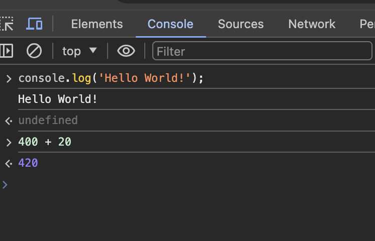
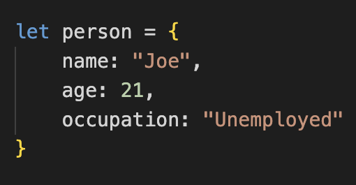

JavaScript is unique because every browser has a JavaScript engine. For example, Firefox's JavaScript engine is called "spider monkey" and Chrome's JavaScript engine is called "v8". For a while, there was no way to run JavaScript code outside of a browser. However in 2009, some dude named Ryan Dahl embedded Chrome's JavaScript engine in a C++ program.This created a way for JavaScript code to run outside of a browser. He called this "Node".
JS code can be ran in the JavaScript console in Chrome:
You can run JS files by embedding them in HTML, opening the HTML file in the browser, and viewing the console
Or you run JS files with Node. To run JS files with Node:
"node [filename.js] Variables should always be declared with either the let or const keywords
If a variable is not reassigned, use const. Otherwise, use let.
One important note is JS variables cannot use
hyphens. Therefore, variables need to use camelNamingConvention
Primitive Types: special data types built into languages
You can group multiple variables in a single object like:
You can log the whole object to the console with
console.log(person).
Objects usually contain variables and functions. However, when inside of an object variables are called "properties" and functions are called "methods".
You can log a property using console.log(person.age)